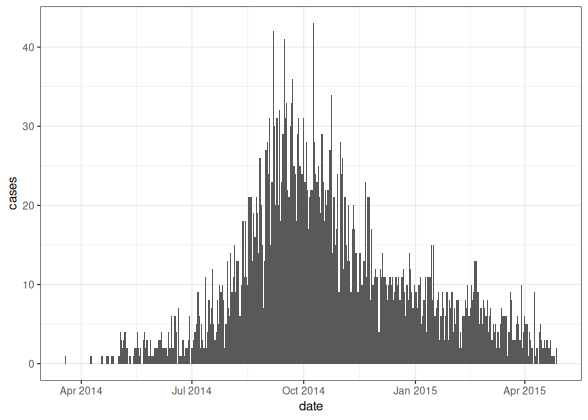
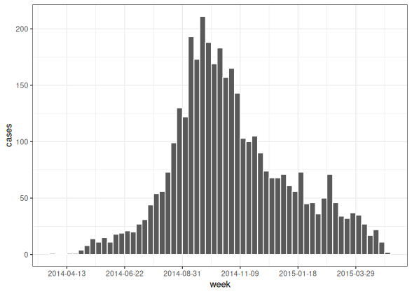
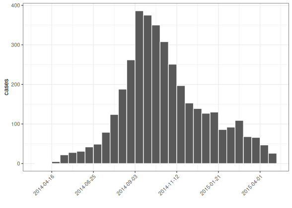
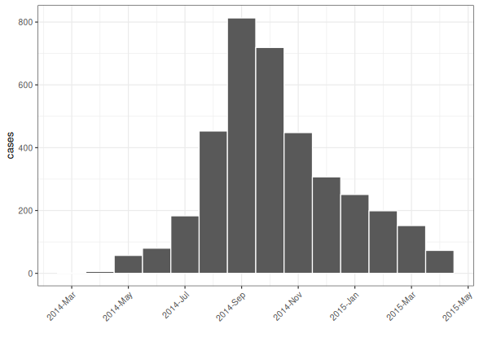
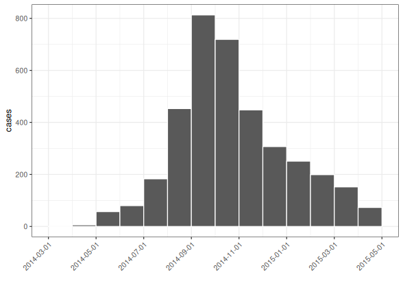
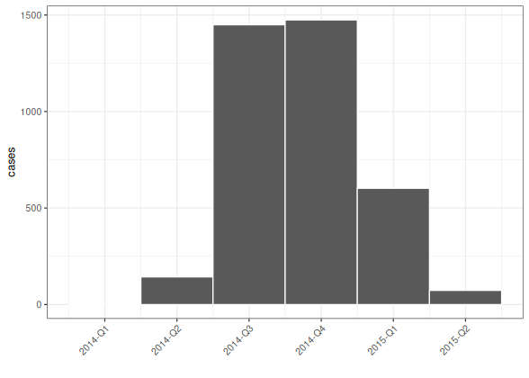
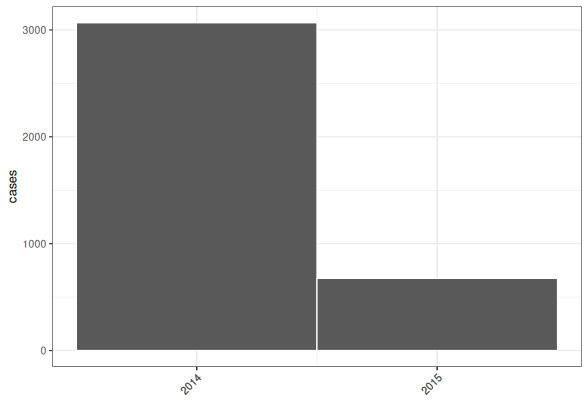
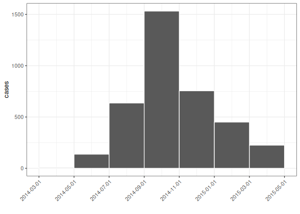
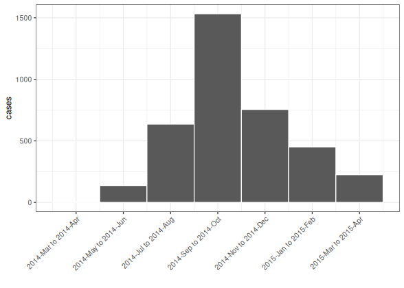

The goal of grates is to make it easy to group dates across a range of different time intervals. It defines a collection of classes and associated methods that, together, formalise the concept of grouped dates and are intuitive to use. Currently there are classes implemented for year-week, year-month, year-quarter and yearly groupings as well as for more flexible groupings across days and months.
To illustrate are examples we use data on a simulated outbreak of Ebola Virus Disease from the outbreaks package. For our purposes we are not concerned with analysing the data, instead we simply use the date_of_infection to help illustrate grates functionality. To start, let us first look at the daily data.
library(grates)
library(outbreaks)
library(ggplot2)
# Pull out the date of infection
x <- ebola_sim_clean$linelist$date_of_infection
# Calculate the daily incidence totals (ignoring missing values)
daily <- aggregate(list(cases = x), by = list(date = x), FUN = length)
# Add explicit zeros for days which aren't present
range <- seq.Date(min(daily$date), max(daily$date), by = "day")
daily <- merge(data.frame(date = range), daily, by = "date", all.x = TRUE)
daily <- within(daily, cases[is.na(cases)] <- 0)
# plot the resulting output
ggplot(daily, aes(date, cases)) + geom_col(width = 1) + theme_bw()

One of the more common date groupings is to a weekly level and grates defines
three classes for users to work with, <grates_isoweek>, <grates_epiweek> and
the <grates_yearweek>.
The most general of these is the <grates_yearweek> class. When creating a
general yearweek object, users must specify an associated firstday of the
week. This is a value from 1 to 7 representing Monday through Sunday. These
objects can be constructed directly via the yearweek() or with the coercion
function, as_yearweek().
Internally, yearweek objects are stored as the number of weeks (starting at 0)
from the date of the firstday nearest the Unix Epoch (1970-01-01). Put more
simply, the number of seven day periods from:
firstday equal to 1 (Monday)firstday equal to 2 (Tuesday)firstday equal to 3 (Wednesday)firstday equal to 4 (Thursday)firstday equal to 5 (Friday)firstday equal to 6 (Saturday)firstday equal to 7 (Sunday)We use this anchoring around the Unix Epoch as it allows for very efficient conversion to, and from, date objects in which themselves anchor on 1970-01-01.
That said, most users should not need to consider this internal representation and should be able to use grates blissfully unaware.
<grates_isoweek> objects are used to represent ISO week dates as defined in
ISO 8601. To expand further, it is
easiest to quote from Wikipedia1
ISO weeks start with Monday and end on Sunday. Each week’s year is the Gregorian year in which the Thursday falls. The first week of the year, hence, always contains 4 January. ISO week year numbering therefore usually deviates by 1 from the Gregorian for some days close to 1 January.
Functionally, a <grates_isoweek> is equivalent to a <grates_yearweek> object
with an associated firstday value of 1 (Monday).
<grates_epiweek> objects are similar but instead of starting on a Monday, they
start on a Sunday. They have been commonly used by the CDC in America and are
sometimes called CDC weeks. Functionally they are equivalent to a
<grates_yearweek> object with an associated firstday value of 7 (Sunday).
Continuing with the Ebola data from earlier we can now calculate weekly case counts:
# calculate the total number for across each week
week_dat <- with(daily,
aggregate(
list(cases = cases),
by = list(week = as_isoweek(date)),
FUN = sum
)
)
head(week_dat)
#> week cases
#> 1 2014-W12 1
#> 2 2014-W13 0
#> 3 2014-W14 0
#> 4 2014-W15 1
#> 5 2014-W16 1
#> 6 2014-W17 4
# plot the output
(week_plot <-
ggplot(week_dat, aes(week, cases)) +
geom_col(width = 1, colour = "white") +
theme_bw())
To assist in formatting plots of grates objects we also provides x-axis scales
that can be to extend the output from
ggplot2 output. For example, if
we prefer non-centralised Date labels we can pass an explicit format argument
to the associated scale
week_plot + scale_x_grates_epiweek(format = "%Y-%m-%d")

<grates_period> objects represent groupings of n consecutive days calculated
relative to an offset. It is useful for when you wish to group an arbitrary
number of dates together (e.g. 10 days).
Internally <grates_period> objects are stored as the integer number, starting
at 0, of periods since the Unix Epoch (1970-01-01) and a specified offset. Here
periods are taken to mean groupings of n consecutive days. For storage and
calculation purposes, offset is scaled relative to n, that is
offset <- offset %% n and values of stored relative to this scaled offset.
Like yearweek objects, a period object is easily created with the as_period()
coercion function. as_period() takes 3 arguments; x, the vector you wish to
group, n, the integer number of days you wish to group, and offset, the
value you wish to start counting groups from relative to the Unix Epoch. For
convenience, offset can be given as a date you want periods to be relative to
(internally this date is converted to integer). For both Date and POSIXt objects
offset defaults to the minimum value of the input x.
In the example below we aggregate by 14 day periods offset from the earliest case:
period_dat <- with(daily,
aggregate(
list(cases = cases),
by = list(period = as_period(date, n = 14, offset = min(date))),
FUN = sum
)
)
head(period_dat)
#> period cases
#> 1 2014-03-19 to 2014-04-01 1
#> 2 2014-04-02 to 2014-04-15 1
#> 3 2014-04-16 to 2014-04-29 5
#> 4 2014-04-30 to 2014-05-13 22
#> 5 2014-05-14 to 2014-05-27 28
#> 6 2014-05-28 to 2014-06-10 31
ggplot(period_dat, aes(period, cases)) +
geom_col(width = 1, colour = "white") +
theme_bw() +
theme(axis.text.x = element_text(angle = 45, hjust = 1)) +
xlab("")

Unsurprisingly, <grates_yearmonth>, <grates_yearquarter> and <grates_year>
represent Year-month, year-quarter and year groupings. Little more needs to be
said so let’s jump straight to some examples.
These objects are stored as the integer number of months/quarters/years (starting at 0) since the Unix Epoch (1970-01-01). To convert efficiently between dates and months relative to the UNIX Epoch we used an algorithm based on the approach of Davis Vaughan in the unreleased datea package.
(month_dat <- with(daily,
aggregate(
list(cases = cases),
by = list(month = as_yearmonth(date)),
FUN = sum
)
))
#> month cases
#> 1 2014-Mar 1
#> 2 2014-Apr 6
#> 3 2014-May 57
#> 4 2014-Jun 80
#> 5 2014-Jul 183
#> 6 2014-Aug 453
#> 7 2014-Sep 813
#> 8 2014-Oct 719
#> 9 2014-Nov 448
#> 10 2014-Dec 307
#> 11 2015-Jan 251
#> 12 2015-Feb 199
#> 13 2015-Mar 152
#> 14 2015-Apr 73
(month_plot <-
ggplot(month_dat, aes(month, cases)) +
geom_col(width = 1, colour = "white") +
theme_bw() +
theme(axis.text.x = element_text(angle = 45, hjust = 1)) +
xlab(""))

Again we can have non-centred date labels by applying the associated scale with the desired format.
month_plot + scale_x_grates_yearmonth(format = "%Y-%m-%d")

yearquarter works similarly
(quarter_dat <- with(daily,
aggregate(
list(cases = cases),
by = list(quarter = as_yearquarter(date)),
FUN = sum
)
))
#> quarter cases
#> 1 2014-Q1 1
#> 2 2014-Q2 143
#> 3 2014-Q3 1449
#> 4 2014-Q4 1474
#> 5 2015-Q1 602
#> 6 2015-Q2 73
ggplot(quarter_dat, aes(quarter, cases)) +
geom_col(width = 1, colour = "white") +
theme_bw() +
theme(axis.text.x = element_text(angle = 45, hjust = 1)) +
xlab("")

As does year
(year_dat <- with(daily,
aggregate(
list(cases = cases),
by = list(year = as_year(date)),
FUN = sum
)
))
#> year cases
#> 1 2014 3067
#> 2 2015 675
ggplot(year_dat, aes(year, cases)) +
geom_col(width = 1, colour = "white") +
theme_bw() +
theme(axis.text.x = element_text(angle = 45, hjust = 1)) +
xlab("")

Month objects are groupings of ‘n consecutive months’ stored relative to the
Unix Epoch. More precisely, grates_month objects are stored as the integer
number (starting at 0), of n-month groups since the Unix Epoch (1970-01-01).
This fixed anchoring does make them a little unwieldy but I find they can be
useful for bimonthly data.
# calculate the bimonthly number of cases
(bimonth_dat <- with(daily,
aggregate(
list(cases = cases),
by = list(group = as_month(date, n = 2)),
FUN = sum
)
))
#> group cases
#> 1 2014-Mar to 2014-Apr 7
#> 2 2014-May to 2014-Jun 137
#> 3 2014-Jul to 2014-Aug 636
#> 4 2014-Sep to 2014-Oct 1532
#> 5 2014-Nov to 2014-Dec 755
#> 6 2015-Jan to 2015-Feb 450
#> 7 2015-Mar to 2015-Apr 225
# by default lower date bounds are used for the x axis
(bimonth_plot <-
ggplot(bimonth_dat, aes(group, cases)) +
geom_col(width = 1, colour = "white") +
theme_bw() +
theme(axis.text.x = element_text(angle = 45, hjust = 1)) +
xlab(""))

Note that the default plotting behaviour of non-centred date labels is different to that of the yearweek, yearmonth, yearquarter and year scales where labels are centred by default. To obtain centred labels you must explicitly set the format to NULL in the scale:
bimonth_plot + scale_x_grates_month(format = NULL, n = 2L)

For all grates objects we have added many methods and operations to ensure logical and consistent behaviour.
# Choose some dates spread across a few weeks
first <- as.Date("2024-12-18")
dates <- seq.Date(from = first, by = "5 days", length.out = 7)
# add the corresponding ISO week (see later)
dat <- data.frame(date = dates, isoweek = as_isoweek(dates))
Some times it is useful to access both the starting dates covered by grates
objects as well as the end dates. To this end we provide functions
date_start() and date_end():
with(dat, {
weeks <- unique(isoweek)
data.frame(
isoweek = weeks,
start = date_start(weeks),
end = date_end(weeks)
)
})
#> isoweek start end
#> 1 2024-W51 2024-12-16 2024-12-22
#> 2 2024-W52 2024-12-23 2024-12-29
#> 3 2025-W01 2024-12-30 2025-01-05
#> 4 2025-W02 2025-01-06 2025-01-12
#> 5 2025-W03 2025-01-13 2025-01-19
Note that the conversion of grate objects back to dates is analogous to
date_start().
with(dat, identical(as.Date(isoweek), date_start(isoweek)))
#> [1] TRUE
To find out whether a grate object spans a particular date we provide a
%during% function:
with(dat, {
data.frame(
original_date = date,
isoweek,
contains.2025.01.10 = as.Date("2025-01-10") %during% isoweek
)
})
#> original_date isoweek contains.2025.01.10
#> 1 2024-12-18 2024-W51 FALSE
#> 2 2024-12-23 2024-W52 FALSE
#> 3 2024-12-28 2024-W52 FALSE
#> 4 2025-01-02 2025-W01 FALSE
#> 5 2025-01-07 2025-W02 TRUE
#> 6 2025-01-12 2025-W02 TRUE
#> 7 2025-01-17 2025-W03 FALSE
min(), max(), range() and seq() all work as you would expect
weeks <- dat$isoweek
(minw <- min(weeks))
#> <grates_isoweek[1]>
#> [1] "2024-W51"
(maxw <- max(weeks))
#> <grates_isoweek[1]>
#> [1] "2025-W03"
(rangew <- range(weeks))
#> <grates_isoweek[2]>
#> [1] "2024-W51" "2025-W03"
# seq method works if both `from` and `to` are epiweeks
seq(from = minw, to = maxw, by = 6L)
#> <grates_isoweek[1]>
#> [1] "2024-W51"
# but will error informatively if `to` is a different class
seq(from = minw, to = 999, by = 6L)
#> Error in seq.grates_isoweek(from = minw, to = 999, by = 6L): `to` must be a <grates_isoweek> object of length 1.
Addition (subtraction) of whole numbers will add (subtract) the corresponding number of weeks to (from) the object
(dat <- transform(dat, plus4 = isoweek + 4L, minus4 = isoweek - 4L))
#> date isoweek plus4 minus4
#> 1 2024-12-18 2024-W51 2025-W03 2024-W47
#> 2 2024-12-23 2024-W52 2025-W04 2024-W48
#> 3 2024-12-28 2024-W52 2025-W04 2024-W48
#> 4 2025-01-02 2025-W01 2025-W05 2024-W49
#> 5 2025-01-07 2025-W02 2025-W06 2024-W50
#> 6 2025-01-12 2025-W02 2025-W06 2024-W50
#> 7 2025-01-17 2025-W03 2025-W07 2024-W51
Addition of two yearweek objects will error as the intention is unclear.
transform(dat, willerror = isoweek + isoweek)
#> Error in Ops.grates_isoweek(isoweek, isoweek): Cannot add <grates_isoweek> objects to each other.
Subtraction of two yearweek objects gives the difference in weeks between them
transform(dat, difference = plus4 - minus4)
#> date isoweek plus4 minus4 difference
#> 1 2024-12-18 2024-W51 2025-W03 2024-W47 8 weeks
#> 2 2024-12-23 2024-W52 2025-W04 2024-W48 8 weeks
#> 3 2024-12-28 2024-W52 2025-W04 2024-W48 8 weeks
#> 4 2025-01-02 2025-W01 2025-W05 2024-W49 8 weeks
#> 5 2025-01-07 2025-W02 2025-W06 2024-W50 8 weeks
#> 6 2025-01-12 2025-W02 2025-W06 2024-W50 8 weeks
#> 7 2025-01-17 2025-W03 2025-W07 2024-W51 8 weeks
epiweek objects can be combined with themselves but not other classes (assuming an epiweek object is the first entry).
c(minw, maxw)
#> <grates_isoweek[2]>
#> [1] "2024-W51" "2025-W03"
identical(c(minw, maxw), rangew)
#> [1] TRUE
c(minw, 1L)
#> Error in c.grates_isoweek(minw, 1L): Unable to combine <grates_isoweek> objects with other classes.
The underlying implementation for these objects build upon ideas of Davis Vaughan and the unreleased datea package as well as those of Zhian Kamvar and the aweek package.
Wikipedia contributors. (2025, January 15). ISO week date. In Wikipedia, The Free Encyclopedia. Retrieved 12:47, March 6, 2025, from https://en.wikipedia.org/w/index.php?title=ISO_week_date&oldid=1269568343: ↩